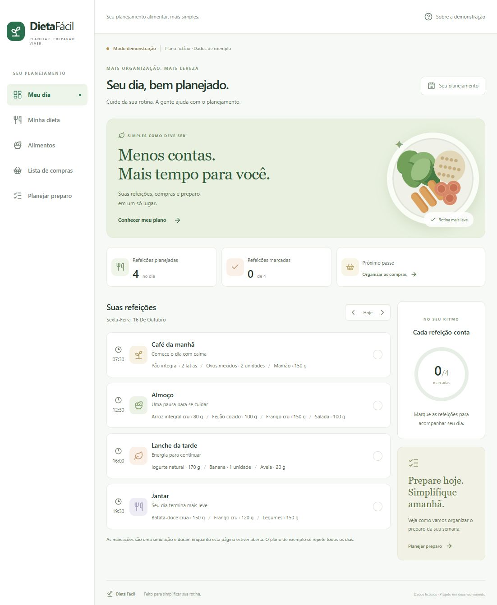

Planejamento alimentar / Aplicação webPROJETO 01Em desenvolvimento
Dieta Fácil↗
Transformar um plano alimentar definido em uma rotina mais organizada de refeições, compras e preparo.
JÁ IMPLEMENTADO
Explorar o projeto ↓Ver código no GitHub ↗Cadastro e login, edição de perfil, demonstração de refeições e catálogo pessoal de alimentos.